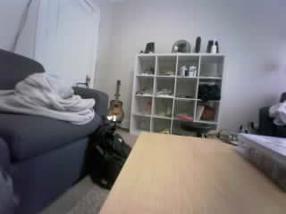
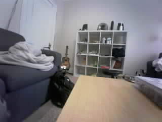

Frame 540: LARGE_CHANGE | 40.479% changed area
Original JPEG · MeasurementsOriginal photos are unchanged. Boxes show the largest changed region against the learned empty scene. Area cutoff: 3%; confirmation: 3 frames. This is not deer recognition.

Frame 540: LARGE_CHANGE | 40.479% changed area
Original JPEG · MeasurementsFrame 547: SETTLING | 0.000% changed area
Original JPEG · Measurements
Frame 554: CALIBRATING | 0.000% changed area
Original JPEG · MeasurementsFrame 561: CALIBRATING | 0.000% changed area
Original JPEG · MeasurementsFrame 568: CLEAR | 0.000% changed area
Original JPEG · MeasurementsFrame 575: CLEAR | 0.000% changed area
Original JPEG · MeasurementsFrame 582: CLEAR | 0.000% changed area
Original JPEG · MeasurementsFrame 589: CLEAR | 0.000% changed area
Original JPEG · MeasurementsFrame 596: CLEAR | 0.000% changed area
Original JPEG · MeasurementsFrame 603: CLEAR | 0.000% changed area
Original JPEG · Measurements